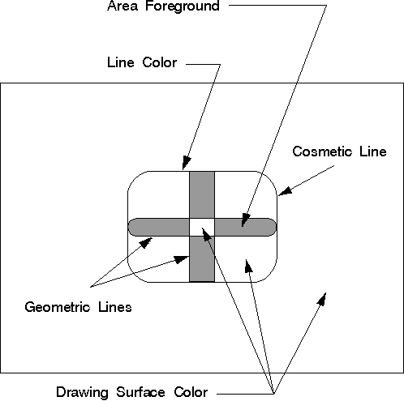

The color attribute defines the color used to draw a primitive or an object. The mix attribute determines how the color of a primitive or an object is combined with the color of the drawing surface, or any other objects on the surface. Unlike the color and mix attributes for primitives, and certain other objects, the path color is defined by different attributes in different situations, as illustrated in the following figure.
Path Objects
Path colors are determined by the area color, area background color, area mix, and area background mix attributes if the path is stroked into a wide line. The cosmetic line path color is determined by the line color and mix attributes.
The line color defines the color used to draw the output from any of the IBM OS/2 line functions called within the path. The line colors can change within the path bracket, just as they can within area brackets. The interaction of the line with the drawing-surface color is controlled by the line mix attribute, which also can vary within the path bracket.
After the path is closed, the path can be stroked into a geometric (or wide) line. Depending on the construction options, the geometric line can be filled. The appearance of the pattern symbol used to fill the path depends on the area attributes. The definitions of the area color and background color depend on the pattern symbol.